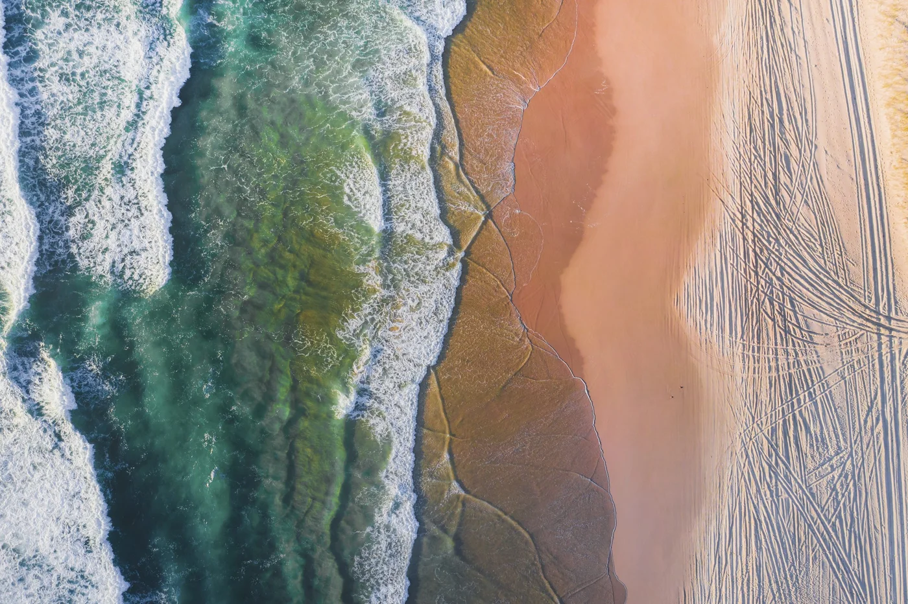
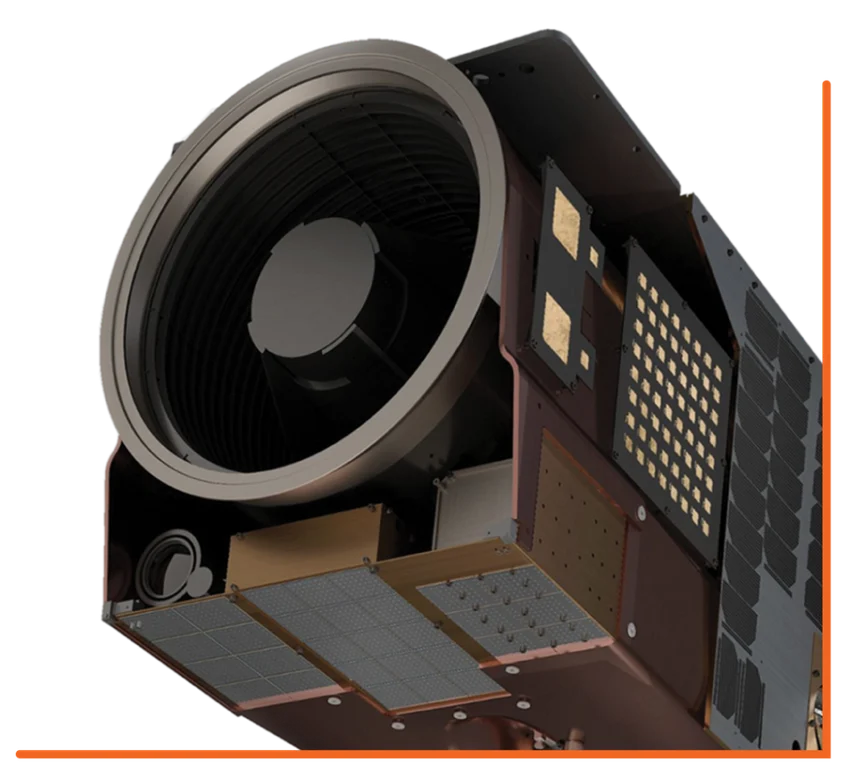

Multispectral camera
Spatial resolution: up to 50 cm
Swath width: 8 km
Altitude: 470 km
 Contact us
Contact us
Uzma Digital Earth
Access the best data from space to see better, see the bigger picture, see the unseen.

Malaysia's first commercial
very high-resolution Earth observation satellite.
Uzma Digital Earth
Unlock the insights that drive innovation and empower better decision-making with Uzma Digital Earth.

50cm
Imagery resolution up to 50 cm per pixel.
470km
Published orbital altitude above Earth.
8km
Imaging swath for a broader view in every pass.
15 JAN
2025
Launched aboard SpaceX Falcon 9, Transporter-12.
A historic milestone
Malaysia’s first commercial very high-resolution Earth Observation satellite was deployed into low Earth orbit at 4.06am on 15 January 2025, via SpaceX’s Falcon 9 Transporter-12.
The mission launched from Vandenberg Space Force Base, California, at 3.09am GMT+8, marking a new chapter in Malaysia’s geospatial capabilities.
Read the launch storyUZMASAT-1 is a collaboration between Uzma and a leading Earth Observation data collection company, Satellogic. Aiming on evolving the geospatial capabilities in Southeast Asia, the EO satellite was launched on 15 January 2025 from Vandenberg Space Force Base, California, US.
Geospatial AI Sdn Bhd, a wholly-owned subsidiary of Uzma, is expected to swiftly respond to market trends by gaining direct access to precise, frequent revisits, and an extensive collection of satellite imagery. Consequently, Geospatial AI aims to advance in the growing market of geospatial applications.

Spatial resolution: up to 50 cm
Swath width: 8 km
Altitude: 470 km
UzmaSAT-1 features tasking control capabilities.
Expert engineers are involved in the calibration process. The aim: to produce high-accuracy data specifically tailored for the Malaysia region.


Highest available tasking capacity with up to 7 revisits per day/site.
70 cm multispectral data with industry-best radiometric values.
Rapid iteration and manufacturing; continuously increasing quality and capacity.
Capacity and quality statements reproduced from the published 2023–2025+ roadmap.
Developed through the collaboration between Uzma and Satellogic.
Full mission specificationsA world worth looking closer at
Explore a different perspective with imagery from our satellite partner network.

Pulau Bohayen, Sabah, Malaysia
Sample imagery © Satellogic / Digital magnification
UzmaSAT-1 insights
 01 / 10
01 / 10 02 / 10
02 / 10 03 / 10
03 / 10 04 / 10
04 / 10 05 / 10
05 / 10 06 / 10
06 / 10 07 / 10
07 / 10 08 / 10
08 / 10 09 / 10
09 / 10 10 / 10
10 / 10Original imagery and captions from the UzmaSAT-1 product page. Scroll sideways or use the arrows to explore all 10 images.
Pulau Bohayen, Malaysia · Sample imagery © SatellogicOur solutions empower industries with advanced data from space, providing unmatched clarity, precision, and insights. From urban planning to environmental monitoring, we offer innovative tools that help you make smarter, data-driven decisions.

Get precise insights into soil and crop health to optimize agricultural productivity and food security.
Explore this applicationOur services
Discover our comprehensive geospatial services that empower you to visualize and analyze data, enabling informed decision-making across various applications.
Book your date
Uzma Digital Earth Space data. Grounded intelligence.

See the Earth like never before with Geospatial AI’s high-resolution satellite imagery.
Learn more about High Resolution Satellite Imagery
Unlock the power of geospatial data with Geospatial AI’s advanced mapping and analytics services.
Learn more about Mapping & AnalyticsUnlock the full potential of your geospatial data with Geospatial AI’s advanced platform development services.
Learn more about AI Platform Development
Empower your team with the skills and knowledge to harness the power of geospatial technology through our comprehensive training and consultation services.
Learn more about Training & Consultation
Geospatial AI
A wholly owned subsidiary of Uzma

Uzma Geospatial AI
Geospatial AI Sdn Bhd, founded in 2021, is a geospatial analytics company. A wholly owned subsidiary of Uzma Berhad.
Our expertise lies in utilizing satellite imagery and cutting-edge technology to provide actionable insights and information about various aspects of Earth, from urban planning to environmental monitoring.
Get to know usTo become top 3 geospatial analytics companies in Southeast Asia, providing near real-time insights for any surface on Earth by 2030.
UZMASAT-1 Programme: Geospatial intelligence with high temporal and high-spectral resolution satellite imagery for sustainable ESG applications.
Smart Technology Innovation of the Year: Advanced ground movement risk assessment in solar farm environments using satellite-based InSAR technology.
Satellite-driven flood risk assessment and geohazard identification for solar farms.
Our partners enable us to deliver innovative solutions powered by advanced geospatial analytics and satellite technology.


Trusted by clients across industries for innovative geospatial and digital mapping solutions.


Examining the transformative role of AI in geospatial intelligence and advancing Earth observation for timely decision-making.
Explore all news & blogs
Our community
Explore our virtual challenge and more stories from the Geospatial AI community.
Follow our community updatesUnlock the universe
Register your interest in UzmaSAT-1 through the original Uzma Group registration page.
Join nowThe original form requests your name, email and contact number.

Experience the technology today
Connect with us to discover how space data insights can bring certainty to your decisions and drive business growth.
Share more information with me Book an appointmentManager
+603 7611 4031ather.tauphik@uzmagroup.comSenior Business Development
+6011 5677 0921arief.azhar@uzmagroup.comSenior Business Development
+6010 575 4463hafiz.talib@uzmagroup.comUzma Tower, Damansara Perdana
Jalan PJU 8/8A, Petaling Jaya